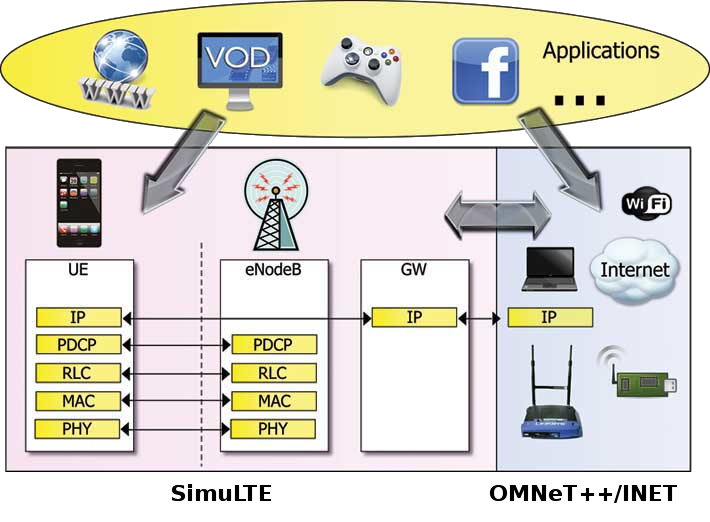

What is SimuLTE
SimuLTE is an innovative simulation tool enabling complex system level performance evaluation of LTE and LTE Advanced networks (3GPP Release 8 and beyond).
SimuLTE is fully customizable with a simple pluggable interface. One can also develop new modules implementing new algorithms and protocols.
SimuLTE is an open source project building on top of OMNeT++ and INET Framework. Participation and contributions are welcome.
Architecture
| APPS: VoIP GSM AMR, Video Streaming H.264, Real-time gaming, FTP, etc. |
RLC: UM and AM segmentation and reassembly retransmissions (AM only). |
MAC: Buffering, PDU concatenation, CQI reception, transport format selection and resource allocation, Coding designed to facilitate cross-layer analysis. |
| PHY: 2x2 MU-MIMO, S-MUX, transmit diversity using SINR curves. |
User Terminals: Mobility, Battery consumption, Interference, All types of traffic, Built-in applications: VoIP, gaming, VoD, web, etc. |
E-NodeB: Macro, micro, pico eNodeBs,Inter-eNB Coordination through X2 interface, Relay nodes, Distributed antennas,SU and MU-MIMO, Scheduling algorithms, Max C/I, Proportional Fair, Round Robin, etc. |